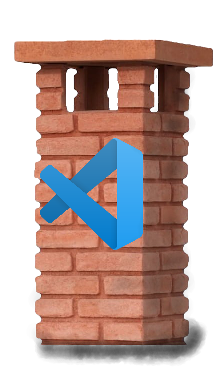
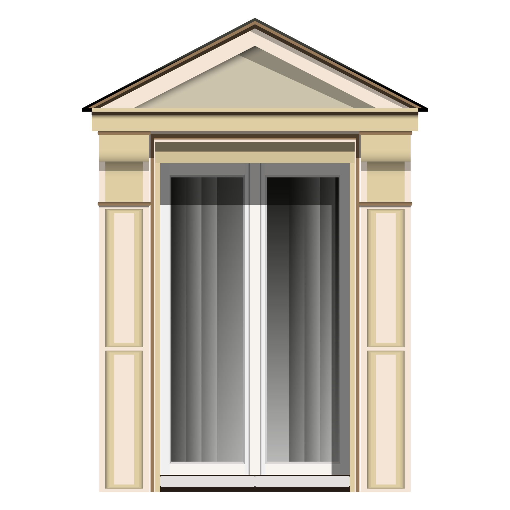
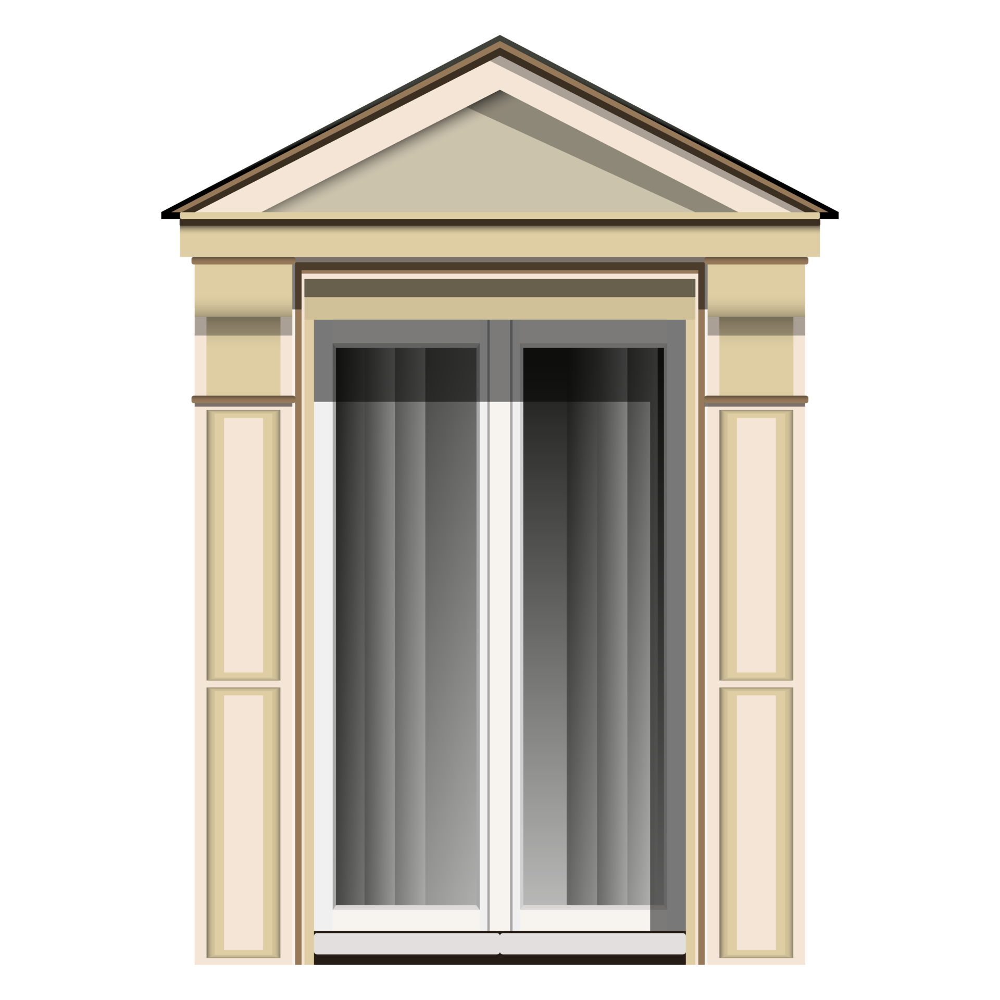
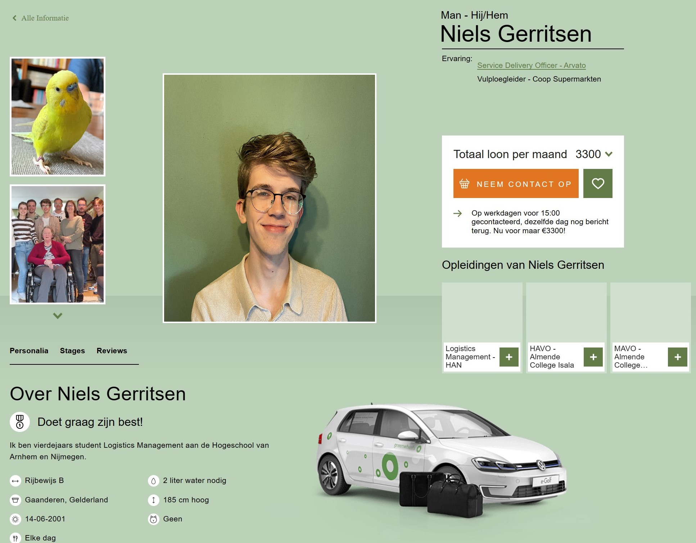

Smart
Connection
Connection
Tijdens deze lessen heb ik geleerd hoe er met HTML geprogammeerd kan worden. Het portofolio en alle onderdelen die erin zijn verwerkt is tot stand gekomen door deze lessen. Dit portofolio is geschreven in HTML via Visual Studio Code
6-9 Hello World CV
Als eerste opdracht hebben wij een bestaande webpagina om moeten bouwen tot CV. Ik heb hiervoor gekozen voor een favoriete site van mij: Plantsome. Ik heb hierbij de verkoop pagina van een plant omgebouwd tot een werkende pagina.Het maken van de pagina duurde alleen langer dan verwacht door de lange tijd die de pagina had voordat die opnieuw was geladen. Ik heb ook geprobeerd deze site te uploaden op github alleen was dit niet gelukt door een fout. 

Opzetten HTML pagina
Vanaf deze les zijn we begonnen met het opbouwen van het portofolio. Eerst had ik een standaard pagina gemaakt zonder te veel poespas. Bij de pagina heb ik ook gebruik gemaakt van javascript voor een normale menubalk. Ik heb hierbij codepen gebruikt om de menubalk toe te voegen. Hierbij kwam ik er al snel achter dat het kopieëren van Javascript niet ging zoals verwacht. Het verwijzen naar verschillende javascripts ging vaak niet, waardoor sommige in 1 javascript bestand werd gevoegd.De huidige menubalk heb ik van codepen afgehaald omdat deze mij best interresant leek. Deze bleef alleen niet onderin de pagina hangen op de juiste manier. Hierdoor heb ik na vaak proberen deze uiteindelijk in een aparte "container" gezet.
Tijdens deze les hebben wij ook geleerd hoe API's kunnen worden gebruikt. Deze heb ik vanuit de site variant om proberen te zetten tot een raam op de begin pagina. Normaal gesproken is het de bedoeling dat de achtergrond verandert van de hele pagina op basis van het huidige weer. Dit wou ik niet bij mijn achtegrond dus moest alleen de container veranderen. Helaas bleek dit niet mogelijk is en blijft de achtergrond de kleuren van "bewolkt" tonen. Aan de onderkant is de Jokes API te vinden, deze haalt bij elke keer dat de webpagina laadt een willekeurige grap zien. Deze API is tot stand gekomen door naar API's op google te zoeken en de tutorial covid19 API te gebruiken van moodle.
Teachable Machine Image Model
Videovoorbeeld van Model Het werkend model
Machine Learning.
De afgelopen weken heb ik veel geleerd over machine learning en de mogelijkheden hiervan. Bij machine learning ontstaat er een algoritme die leert op basis van de gegeven data. Deze data kan blijkbaar ook worden beinvloerd door bias als de aangeleverde data grootendeels uit specifieke dingen bestaat. Zoals het aanleveren van foto's waar grootendeels witte mensen op staan waardoor het systeem iemand met een andere huidskleur niet herkend.In het kader hiernaast heb ik via google machine learning een algoritme ontwikkeld die het verschil moet kunnen herkennen tussen alleen de plant, de pot of de plant met pot. Druk op de start knop en er zal gevraagd worden om de webcam te gebruiken. Zet een plant voor het scherm en zie wat het systeem herkend.
Herlaad de pagina als je de webcam uit wilt zetten :)
Competenties & Wat heb ik geleerd
Competentie: Ambitieuze leerdoelen & Leren buiten mijn vakgebied.Het progammeren in HTML was voor mijn nieuw en naast de technology kant ook de voornaamste reden dat ik gekozen heb voor deze minor. Alles wat ik hier geleerd heb was voor mij nieuw maar ook zeer interrresant.
In plaats van een standaard webpagina te maken wou ik iets waarin ik mijn creativiteit in kwijt kon. Hierdoor heb ik gekozen voor deze opzet waarbij ik huizen heb geprobeerd na te maken. Tijdens deze opzet heb ik lang moeten werken aan het juist krijgen van de verschillende onderdelen. Zo wilden op sommige momenten de verschillende aspecten van de pagina niet goed blijven zitten of veranderde de positie omdat het beeld veranderen. Hiervoor heb ik hulp gevraagd bij de leraar of bij google en is het mij uiteindelijk gelukt.
Competentie: Bewust bezig met persoonlijke groei.
Uiteindelijk heb ik veel geleerd over de mogelijkheden van HMTL coderen en het gebruik van API's. Bij mijn huidige baan gebruiken we het platform JIRA van atlassian en hierbij bleek veel via HTML te worden opgezet waardoor ik deze informatie meteen op werk heb kunnen gebruiken. Door het leren van HTML heb ik veel gedaan ervaring opgedaan en zal dit zeker laten gaan gebruiken, dit was dan ook onderdeel van het doel waarom ik voor deze minor heb gekozen. Ik wil hier zeker meer overleren en zal hiervoor dan ook google handleidingen raadplegen om verder te komen.

Competentie: Actief helpen anderen groeien.
Tijdens verschillende momenten heb ik geholpen met het opzetten van bepaalde aspecten van de html pagina. Voor mijn teamgenoten en voor Mathijs heb ik hierbij geholpen. Hierbij heb ik mijn eigen pagina als voorbeeld gebruikt waardoor ze het nog wel zelf moesten inbrengen.